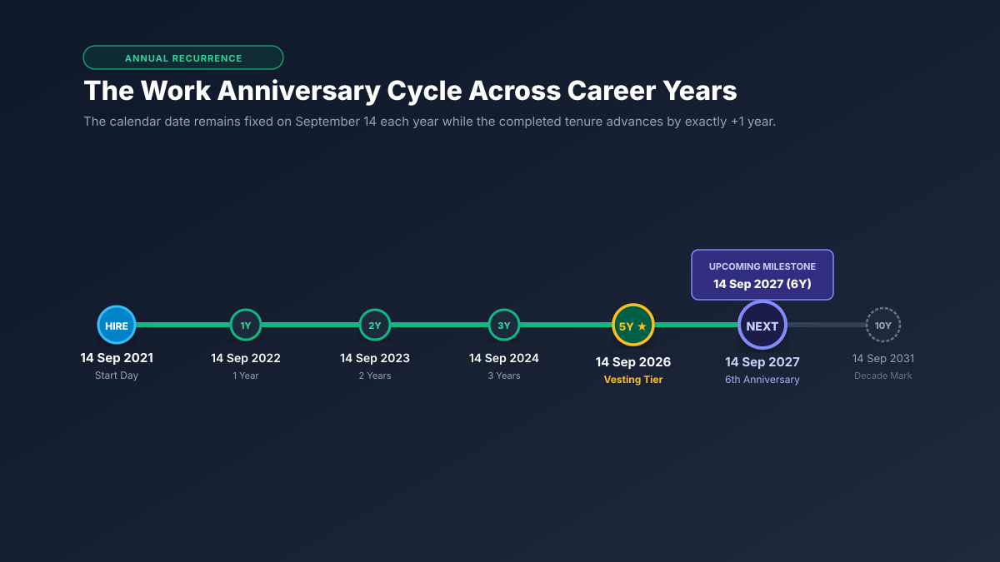

Quick answer
Your work anniversary falls on the same calendar month and day as your official start date, every year. If that date has not yet arrived this year, your next anniversary is this year; if it has passed, it is next year. The milestone is the anniversary year minus the start year.
What a work anniversary is
A work anniversary — also called an employment anniversary, service anniversary or workversary — is the annual recurrence of the date an employee officially joined an organisation. Like a birthday marks another completed year of life, a work anniversary marks another completed year of service.
The distinctions matter. The start date is Day 0: you have completed zero years of service on it. The first anniversary, exactly twelve calendar months later, marks 1 completed year. Every later anniversary adds exactly one completed year.
The 3-step calculation rule
The exact date and milestone of your next work anniversary come from three steps.
Step 1 — Extract the month and day anchor. Take the official start date, for example 14 September 2021. The anchor is month September (09) and day 14.
Step 2 — Compare with today’s reference date. Build the provisional anniversary in the current year (14 September 2026) and compare it with today. If the provisional date is later than today, the next anniversary is this year. If it has passed, it is next year. If it is today, today is your anniversary.
Step 3 — Compute the milestone year. Milestone = anniversary year − start year. A next anniversary in 2027 for a 2021 start marks the 6th work anniversary.
Worked example
Start date 14 September 2021, reference date 23 September 2026.
Start date 14 September 2021, reference date 23 September 2026
Step 1 — Anchor. Month September, day 14.
Step 2 — Provisional date. 14 September 2026 has already passed (23 September is later), so the next anniversary is 14 September 2027.
Step 3 — Milestone. 2027 − 2021 = 6th anniversary, marking 6 completed years.
Step 4 — Days remaining. 14 September 2027 − 23 September 2026 = 356 days.
Result: next anniversary Tuesday, 14 September 2027 — the 6th anniversary, 356 days away.
Three more cases show the rule at each point of the year. Start 10 November 2021, reference 23 September 2026: the anniversary has not yet arrived this year, so the next is Tuesday, 10 November 2026 — the 5th anniversary, 48 days away.
Start 15 March 2019, reference 23 September 2026: the 7th anniversary passed on 15 March 2026, so the next is Monday, 15 March 2027 — the 8th anniversary, 173 days away.
Start 23 September 2022, reference 23 September 2026: the month and day match today exactly, so today is the 4th anniversary, with the next one 365 days away on 23 September 2027.

Days until your next anniversary
Days remaining = next anniversary date − current date, both at midnight. That gives the exact integer count of full days remaining.
Do not estimate by multiplying remaining months by 30 or remaining weeks by 7. Calendar months have 28 to 31 days, and leap years add a day to February, so manual estimates develop an error of 1 to 3 days. Count calendar days, or use the Date Difference Calculator.
Your next five anniversaries
For the worked example above — start date 14 September 2021 — the next five anniversaries are fixed:
| Anniversary | Date | Weekday | Completed years |
|---|---|---|---|
| 6th | 14 September 2027 | Tuesday | 6 |
| 7th | 14 September 2028 | Thursday | 7 |
| 8th | 14 September 2029 | Friday | 8 |
| 9th | 14 September 2030 | Saturday | 9 |
| 10th | 14 September 2031 | Sunday | 10 |
Long-range planning uses the same table: add the target number of completed years to the starting year, on the same month and day, to project milestone dates for PTO tiers, vesting or retirement planning.
Work anniversary vs. years of service
A work anniversary is a specific recurring calendar date and milestone event. Years of service is the continuous cumulative duration of employment, expressed in years, months and days. One is a date; the other is a duration.
| Attribute | Work anniversary | Years of service |
|---|---|---|
| Definition | A recurring calendar date and milestone event. | Continuous cumulative duration of employment. |
| Measurement | Discrete point (for example, 14 September 2027). | Elapsed duration (for example, 5 years, 8 months, 12 days). |
| Frequency | Once every 12 months. | Increases continuously, day by day. |
| Primary purpose | Recognition, celebration, service awards. | Payroll tiers, severance formulas, retirement vesting. |
In short: your work anniversary is the date you reach a milestone; your years of service is the total time you have given the company. Employee tenure is the same idea as years of service from the employer’s side — the retention clock from the official hire date to today or a separation date.
See How to Calculate Employee Tenure for the full method.
Which start date counts
Official start date (joining date). The first day you actively began work or entered paid status. This is the authoritative date for anniversaries and milestone awards.
Offer letter or acceptance date. The day you signed the contract. It precedes employment and is never used as an anniversary.
Orientation date. If orientation came before your first payroll day, standard policy uses the formal payroll effective date.
Adjusted service date. After an unpaid sabbatical, leave or acquisition, HR may assign an adjusted service date for benefit vesting while keeping the original hire date for milestone recognition. Check which date your HR system uses for which purpose.
Leap years and February 29
Employees hired on 29 February face a calendar puzzle in common years, which have only 28 days in February. Two conventions exist. Under the March 1 convention, used by some employers and payroll systems, the anniversary falls on 1 March, on the reasoning that a full year is not complete until 28 February has ended.
Under the February 28 convention, used by many recognition systems, the anniversary is celebrated on the last day of February so the employee is recognised within their hire month. The Work Anniversary Calculator on this site observes February 28 in non-leap years.
In a leap year, the celebration returns to the authentic date of 29 February. Either way, completed years advance on the anniversary — the convention only moves the celebration by a day.
Month-end start dates
Employees who join on the 31st of a month never face ambiguity for their annual anniversary: twelve months later, the same month returns with its full 31 days. The ambiguity appears only for intermediate reviews.
A 6-month review for an employee starting 31 August falls on the last day of February (28 or 29 February), not 2 March — the date clamps to the final day of the shorter month.
Milestone years
Organisations traditionally mark certain anniversaries with special recognition. Year 1 is the onboarding milestone, often a card, team lunch or pin. Year 3 recognises established expertise and is often tied to enhanced vesting or leave brackets. Year 5 is the half-decade checkpoint, commonly marked with a service award certificate or extra vacation days.
Year 10 is the decade pillar, celebrated with executive recognition or a substantial award. Years 15 and 20 honour veteran and leadership service; 25 and 30-plus mark silver and legacy milestones, often with company-wide recognition.
HR teams usually automate this: HRIS software such as Workday, BambooHR, ADP or Rippling sends manager reminders 30 and 7 days before a milestone, posts announcements in Slack or Teams on the day, and steps up leave accrual on the payroll cycle that matches the anniversary.
Common mistakes
- Off-by-one milestone counting. At your 5th anniversary you have completed 5 full years and are beginning your 6th year.
- Using the job offer signature date. Enter the official first working day on payroll, not the acceptance date.
- Counting only working days in the countdown. Anniversary countdowns measure continuous calendar days, including weekends.
- Confusing the anniversary with total career experience. The anniversary belongs to the current employer, not your whole industry career.
- Overlooking adjusted service dates. Unpaid sabbaticals or breaks can reset vesting clocks even when the anniversary stays put.
- Leap-day confusion. Verify whether your company celebrates 29 February hires on 28 February or 1 March in non-leap years.
- Conflating calendar year with fiscal year. Awards may be handed out at a single annual ceremony rather than on the exact date.
Frequently asked questions
How do I calculate my work anniversary?
Your work anniversary occurs every year on the same calendar month and day as your official start date. To calculate your next anniversary, check whether this calendar date has passed in the current year. If it has not yet arrived, your next anniversary occurs this year. If it has already passed, your next anniversary occurs on the same month and day next year.
How do I find my next work anniversary date?
Take the month and day of your employment start date and pair them with the current calendar year. If that date is later than today, that is your next work anniversary date. If that date is before today, advance the year by one.
How do I calculate the days until my next work anniversary?
Calculate the exact elapsed calendar days by subtracting today’s date from your next anniversary date. You can do this by counting remaining whole days or using an automated date-difference calculator.
Is my first work anniversary at 1 year or 0 years?
Your 1st work anniversary marks exactly 1 completed year of service, celebrated exactly 12 months after your start date. The day you join the organization is your start date (Day 0), not your first anniversary.
What is the difference between a work anniversary and years of service?
A work anniversary is a specific recurring calendar date and milestone event (e.g., September 14 celebrating 6 completed years). Years of service is the continuous cumulative duration of time you have worked, expressed in exact years, months, and days.
Does my work anniversary reset if I change roles or get promoted?
No. Internal promotions, lateral department transfers, and job title changes do not reset your company work anniversary. Your organizational anniversary remains anchored to your original joining date.
Takeaways
- Your anniversary is your start month and day, every year.
- Next anniversary: this year if the date is ahead, next year if it has passed.
- Milestone = anniversary year minus start year.
- Count calendar days to the next anniversary — never multiply months by 30.
- Check your employer’s February 29 convention before the date arrives.